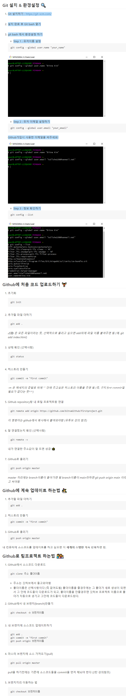
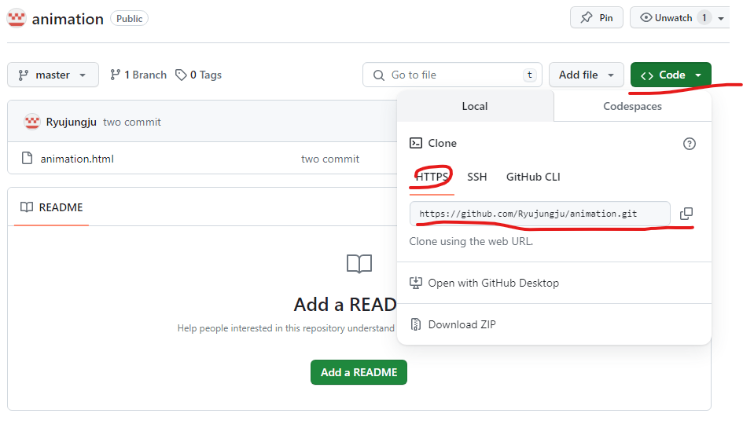

* 깃허브 업로드 과정이 막힐 경우 URL 설명대로 권한 설정 후 전부 껐다가 재시작
https://dog-developers.tistory.com/183
깃허브
- 1. 가입하기
구글 깃허브 검색>가입
- 2. 다운로드 및 환경설정
아래 이미지 설명대로 자신의 컴퓨터에 맞는 운영체제 선택 다운로드 설치 및 순차 진행 필수.

- 깃허브 코드 업로드 방법
. 깃허브에 업로드할 폴더 생성
. 비주얼 스튜디오 실행 - 오픈 폴더 후 1폴더 연결
. 상단 메뉴바 Terminal - New Terminal 선택
. 2번 이미지 처음 코드 업로드 하기 참조하여 순차 진행.
* 동일 프로젝트에 업로드하고 싶은 경우 https의 코드 복사 후 2번-5 순서에 git remote add origin 입력 후 입력.(아래 이미지 참조)

코드펜
- 1. 가입하기 및 로그인
구글 코드펜 검색>가입
- 2. 화면 왼쪽 상단 pen 클릭
- 3. 순차 입력
html엔 body 내용 입력
css엔 style 내용 입력
- 4. 전달
(1)내용 저장 후 오른쪽 하단 export 클릭-zip 압축 후 전달 가능
(2)share - copy Link 후 전달 가능